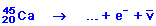
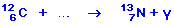
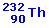
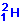
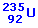
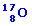

Una nave
se aleja de la Tierra a una velocidad de 0.9 veces la de la luz. Desde
la nave se envía una señal luminosa hacia la Tierra ¿Qué
velocidad tiene esta señal luminosa respecto a la nave? ¿Y
respecto a la Tierra? Razona las respuestas |
Dos sucesos que ocurren en el mismo lugar
y al mismo tiempo para un observador ¿serán simultáneos
para un segundo observador que se mueve respecto al primero? |
Comenta la veracidad o falsedad de las
siguientes afirmaciones, razonando la respuesta:
a) La velocidad de la luz depende del movimiento
de la fuente que la emite.
b) Dos sucesos simultáneos lo son en cualquier sistema de referencia
c) Si aplicamos una fuerza constante durante un tiempo ilimitado a una
partícula de masa en reposo m0 la energía cinética
máxima que se alcanza es: 1/2 m0c2 |
Completar las siguientes reacciones nucleares:
a)
 |
b)
|
c)
|
d)
 |
e)
|
f)
|
|
Completa las siguientes reacciones nucleares,
determinando el número atómico y el número másico
del elemento desconocido X
|
En la desintegración del  se
emiten seis partículas α y cuatro β. Determina
el número atómico y el número másico del núcleo
resultante |
Si un isótopo radioactivo tiene
un período de semidesintegración de 1 día ¿qué
parte de una muestra queda después de dos días? |
Un acelerador produce protones con velocidad
0.9c a razón de 3·1018 partículas por
segundo en ráfagas que duran 10-5 s. Halla la energía
total de todas las partículas de una ráfaga. Si se producen
100 ráfagas por segundo calcula la potencia del acelerador.
Masa en reposo del protón 1.67·10-27 kg |
Determina la energía, en eV, de
un fotón de luz verde cuya longitud de onda es λ = 670 nm
|
La luz solar que llega a la Tierra tiene
una intensidad de 1800 W/m2 ¿Cuántos fotones
por metro cuadrado y por segundo representa esta radiación? Suponer
una longitud de onda media para la luz solar de 550 nm. Dato: h
= 6.63·10-34 J·s |
¿Cómo explicó Einstein
la existencia de una longitud de onda crítica, λc,
por encima de la cual los electrones no serían emitidos? |
Una superficie metálica emite electrones
por efecto fotoeléctrico cuando sobre ella incide luz verde (500
nm), pero no lo hace cuando la luz es amarilla (600 nm) ¿Emitirá
electrones cuando sobre ella incida luz azul (400 nm)? ¿Y si es
roja (700 nm). Razona la respuesta |
¿Por qué el espectro del
hidrógeno tiene muchas líneas si el átomo de hidrógeno
tiene un sólo electrón? |
La transición electrónica
del sodio que ocurre entre dos de sus niveles energéticos tiene
una energía E = 3.37·10-19 J. Supongamos que
se ilumina un átomo de sodio con luz monocrómática
cuya longitud de onda puede ser λ1 = 685.7 nm, λ2
= 642.2 nm o λ3 = 589.6 nm
¿Se conseguirá excitar un electrón desde el nivel
de menor energía al de mayor energía con alguna de estas
radiaciones? ¿Con cuál o cuáles de ellas? Razona
la respuesta |
¿Por qué los rayos ultravioleta
(invisibles) al incidir sobre una pantalla fluorescente se transforman
en azules y verdes? |
a) Comenta dos fenómenos
físicos a favor de la teoría ondulatoria de la luz
b) Comenta dos fenómenos
físicos a favor de la teoría corpuscular de la luz |
Enuncia el principio de indeterminación
de Heisemberg ¿Cuál es su expresión matemática? |
Postulados de la relatividad de Einstein |
Describir brevemente los resultados experimentales
no predichos o explicados por la física clásica que se predicen
o explican mediante la teoría de la relatividad |
Enunciad las leyes de conservación
de las reacciones nucleares |
Describir las partículas que se
emiten en los tres tipos de desintegración radioactiva |
¿Qué es un rayo β? ¿Y
un rayo γ? |
Define los conceptos de constante radioactiva,
vida media o período y período de semidesintegración |
Concepto de isótopo. Aplicaciones
de los isótopos |
¿En qué condiciones debe
estar un núcleo para que produzca emisión γ? |
Cuando el se
bombardea con deuterones  se
emite una partícula α ¿Cuáles son el número
atómico y el número másico del núcleo resultante? |
Si un núcleo de Li, de número
atómico 3 y número másico 6, reacciona con un núcleo
de un determinado elemento X se producen dos partículas α
Escribe la reacción y determina el número atómico
y el número másico del elemento X |
Calcula el número de partículas
α y β emitidas en la desintegración: |
Cuando un núcleo de  captura
un neutrón se produce un isótopo del Ba con número
másico 141, un isótopo del Kr cuyo número atómico
es 36 y tres neutrones.
Se pide calcular el número atómico del isótopo del
Ba y el número másico del isotopo del Kr |
Cuando el nitrógeno absorbe una
partícula α se produce el isótopo del oxígeno

y un protón. A partir de estos datos determinar los números
atómico y másico del nitrógeno y escribir la reacción
ajustada |
La energía de enlace. Explicar como
se calcula a partir del defecto de masa |
¿Es la masa de una partícula α
igual a la suma de las masas de dos neutrones y dos protones? ¿Por
qué? |
Describir las reacciones nucleares de fusión
y fisión ¿Por qué en ambas reacciones se desprende
energía? |
Describir el efecto fotoeléctrico
y enumerar alguna de sus aplicaciones |
a)
¿Cuál es la menor energía posible de una radiación
luminosa de λ = 500 nm?
b) ¿Podría existir
una radiación de esta longitud de onda con una energía de
5·10-19 J?
Dato h = 6.63·10-34
S.I |
La energía de disociación
de la molécula de monóxido de carbono es 11 eV. ¿Es
posible disociar esta molécula utilizando la radiación de
632.8 nm procedente de un láser de He-Ne?
Dato: h = 6.6·10-34 J s |
La potencia mínima que puede ser
percibida por un ojo normal en luz amarilla de 589 nm es
3.1·10-16 W. Calcula el mínimo número
de fotones de esta longitud de onda que deben incidir por segundo en la
retina para producir la visión. Dato h = 6.63·10-34
J·s |
Razonar la siguiente expresión:
La indeterminación de la cantidad de movimiento de una partícula
debe ser siempre mayor que h, según el Principio de Indeterminación
de Heisemberg |
Explicar brevemente el efecto Compton y
su relación con la naturaleza de la luz |
Enuncia la hipótesis de Broglie
y comenta algún resultado experimental que dé soporte a
dicha hipótesis |